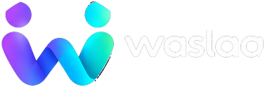

Redirecionando para Waslaa App
Você está sendo direcionado para o aplicativo da Waslaa. Se não for redirecionado automaticamente em alguns instantes, clique no botão abaixo:
Acessar Waslaa App
Você está sendo direcionado para o aplicativo da Waslaa. Se não for redirecionado automaticamente em alguns instantes, clique no botão abaixo:
Acessar Waslaa App